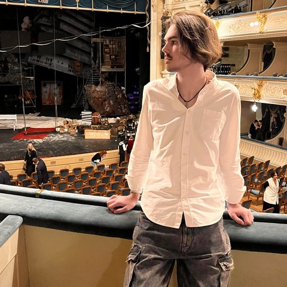
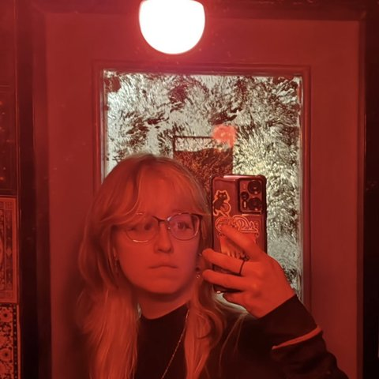

Programme application
Why we need the Claude for Startups programme
Octobar is a game we have been making as a small team since February 2026; it is published on itch.io. The next step is to let players talk to the bar's patrons through the Claude API. Every conversation turn is a real-time model call, so building, testing and tuning this takes far more API usage than our small team can comfortably budget for. The programme's API credits would let us build and playtest it properly. Below is how we plan to use Claude in the game and who is making it.
How we plan to use Claude in Octobar
Status: in development — the current public build uses hand-written dialogue. The Claude API is the core of the next version of Octobar. Nothing in this section is in the released game yet.
1. Living patrons
Coming to Octobar: players will talk to the bar's patrons in free text, and Claude will answer in character. Each reply is grounded in that patron's own lore and backstory, so Evelin, Furry, Gombik, Mr Krys, Lady Moth, Worm, Sun, Big Talk and Guy each keep a distinct voice across the nine campaign guests.
The conversation will affect the shift. A good exchange can change the order, the tip and how patient the guest stays; a poor one can make them leave early.
2. World integration
We are building a link between Claude and the game state. Claude will be given the day number, the drinks served and missed, which patrons the player has already met, and what was said in earlier conversations, including on previous days. The setting rules of the alternative 1920s will be part of the same context. The aim is for stories to evolve differently in each playthrough, with patrons referring to each other and to events in the bar.
3. Guardrails
- Authored character sheets and a world bible are used as system prompts, so every patron stays within an established personality and the setting.
- Structured outputs: each reply is returned as JSON (reply text, mood change, order), which the Godot game parses and checks before acting on it.
- Content moderation on player input and on model output.
- Fallback to authored lines when the API is offline or unavailable, so the game still plays with the hand-written dialogue.
4. Why API credits matter
Every conversation turn is a real-time model call, so development and playtesting need many of them. Credits would cover per-turn dialogue calls during development and playtesting, prompt iteration on the character sheets and world bible, and comparing models for latency and cost before we choose one.
5. Claude Code for development
We will also use Claude Code in day-to-day development of the game.
Team
-

Sarver Salakhutdinov
Servoo
Programmer
Makes the art move and the ideas playable. Brings the bar to life.
-

Dominica Vishnevskaya
Zomino
Art, idea and game design
Dreamed up the world, draws it and gives it a story and a soul.
-
Vera Eremeeva
Fayenowo
Art and game design
Draws the world, shapes how it plays and keeps its economy in balance.